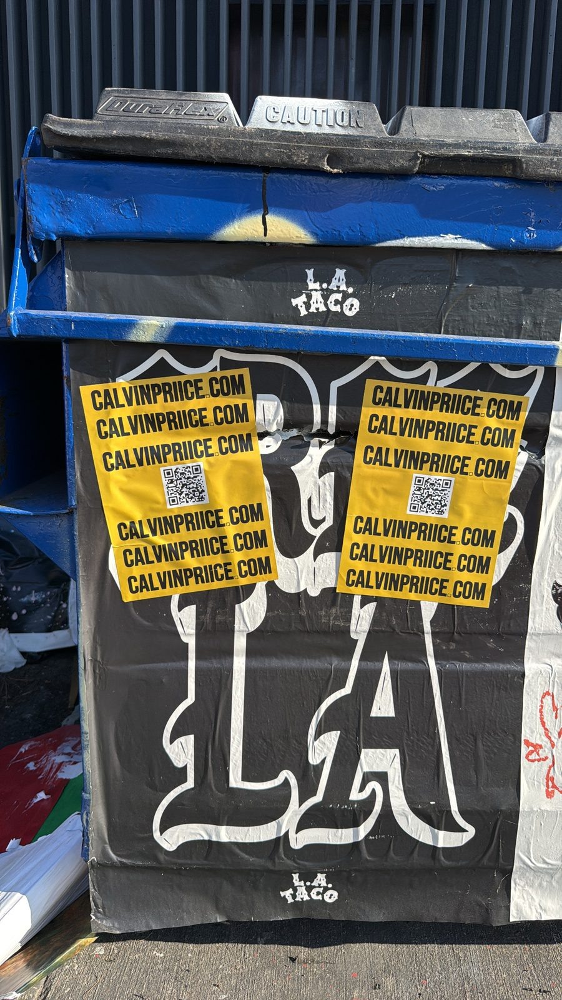
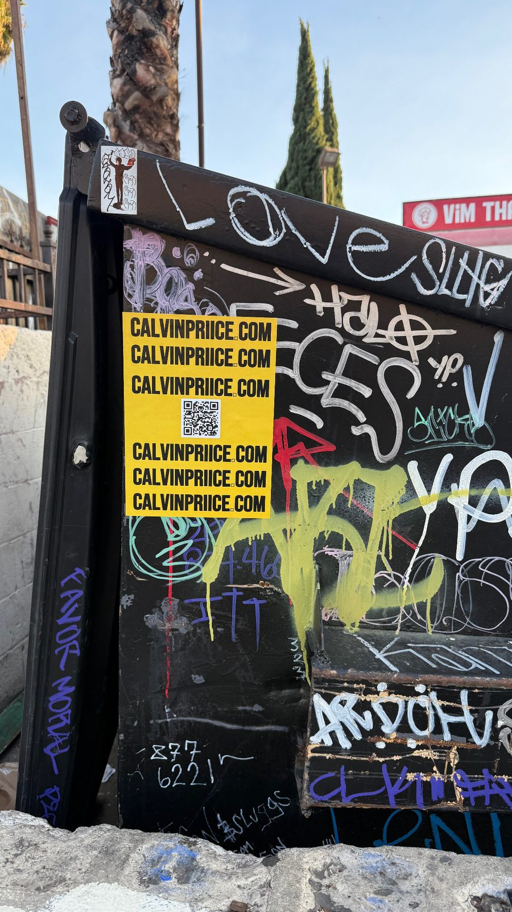
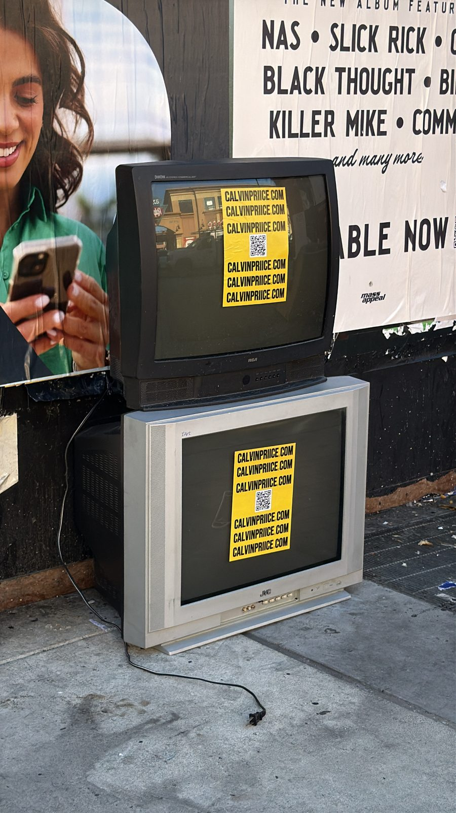
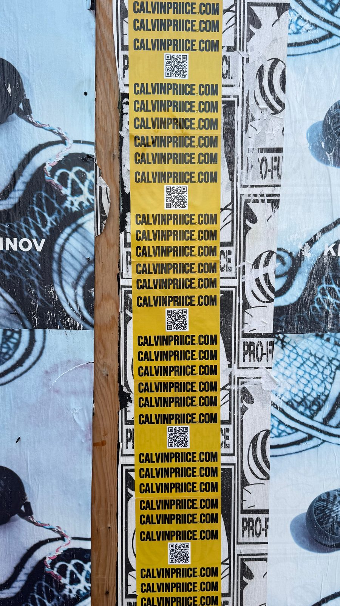

Are You a Real Artist?
Everything about being a musician now lives behind glass. You make the song on a screen, master it on a screen, upload it through a screen, schedule the posts on a screen — then sit there refreshing a screen waiting to see if anybody felt it. The art never has to touch the real world to "exist." And lately that's started to bother me.
Because if everything happens behind glass, then everything can be faked behind glass. Anyone can sit at a laptop and tailor exactly how the world sees them and their art — the perfect grid, the inflated numbers, the curated story. You can build a whole persona without ever leaving your room. And now, with AI flooding the music industry, you don't even need the room. You can generate the voice, the face, the whole "artist." So the question stops being is the song good and becomes something heavier.
That's not a rhetorical jab — it's the actual thing listeners are starting to feel. When a feed is full of polished, possibly-synthetic everything, what cuts through isn't more polish. It's proof of life. Proof that a real human walked somewhere, made something with their hands, and left a mark you could physically stand in front of. That's where real-life brand awareness comes in, and it's exactly why I started running street campaigns with Phantom Pasting to get my name into the actual city.


Think about how many ads a person scrolls past before lunch. Hundreds. Thousands. Your post is one card in an infinite deck, and the deck is dealt by a machine that decides who even sees it. You don't own the reach — you rent it, and the rent keeps going up. A sticker on a wall doesn't have an algorithm. It doesn't get throttled because you didn't post yesterday. When somebody's walking down the block and clocks a column of yellow with my name stacked on it ten times, that's a real moment in real space — unskippable, and weirdly more trustworthy because it took effort to physically be there.


And here's the part the internet purists miss: physical and digital aren't enemies. Every one of these has a QR code on it. The street stops you; the code closes the loop back to the music. Someone scans it on a corner in LA and three seconds later they're on the site, on the song. That's a fan I earned by existing in the world instead of paying to interrupt their feed.
Full transparency on how this happened: I run a guerrilla marketing agency too. Phantom Pasting is my company — wheat pasting and street campaigns are literally what we do for other people. So when I needed to put Calvin Priice on the map physically, I used my own crew, and I learned a lot being the client for once. Knowing where to place it is the whole game: high-traffic corners, the community boards people actually read, the spots that already have culture so your piece reads as native instead of spam. Doing it consistently, in volume, across a city — that's a campaign, not a craft project.
The results aren't a number on a dashboard, and that's the point. It's people saying they saw the name "everywhere." It's scans coming in from neighborhoods I've never personally set foot in. It's the slow build of a name that feels established because it physically occupies space. The street is one of the last places where presence still has to be earned — and earning it is what tells people you're real.
So here's what I actually want to know from you: what are some ways you promote your art that aren't on the internet? We've all got the digital playbook memorized — but what works in the real world? Flyers at venues. Stickers on your gear. CDs and cassettes you hand to people. Painting something nobody asked for. Busking. Mailing zines to fans. The more analog and unhinged, the better. Hit me on Instagram and let's build a list of ways to prove we're real.